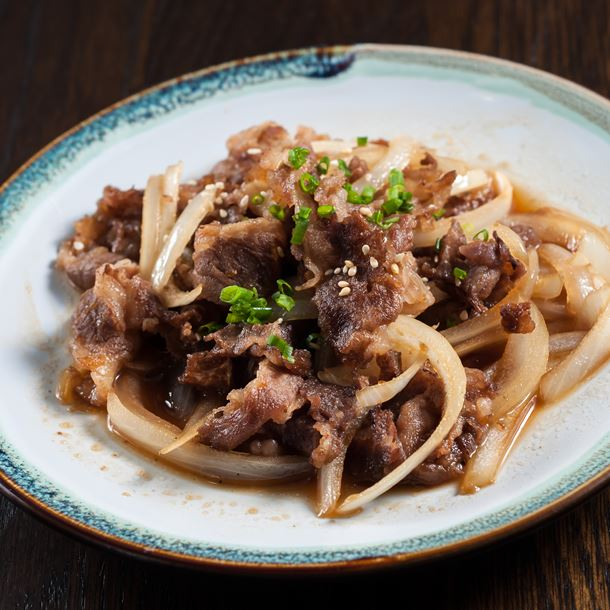

Recette boeuf aux oignons de Louise Maslé
Ingredients nécessaires
- 1 bon kilo de boeuf français
- 3 gros oignons jaunes de chez Lidl
- Bouillon de boeuf
- Coriande
- Poivre et sel
Etapes de la recette
- Coupez la hampe de boeuf en grosses lamelles
- Coupez les oignons en lamelles également
- Faire cuire les oignons avec un bouillon de boeuf pendant 10 bonnes minutes
- Dans une autre poële,faire cuire la viande à feu vif très peu de temps pour qu'elle soit saignante
- Une fois que tout est cuit, mélangez tout et ajoutez la coriande, le poivre et le sel
Régalez vous et bisous
